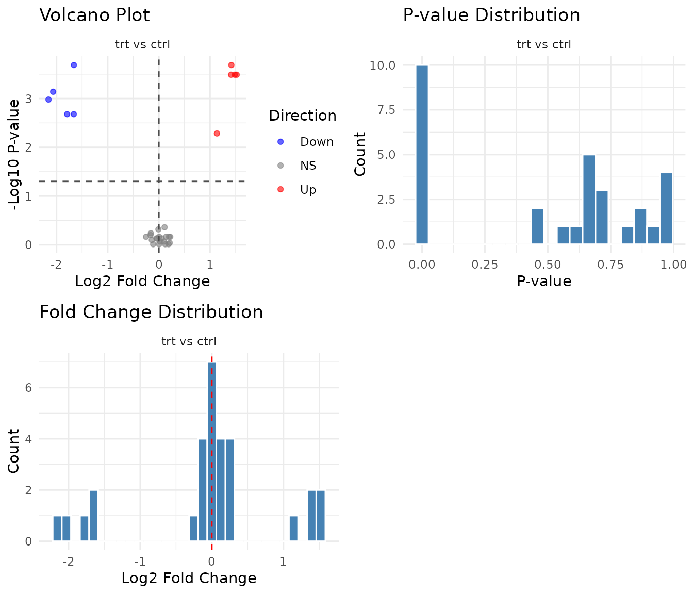
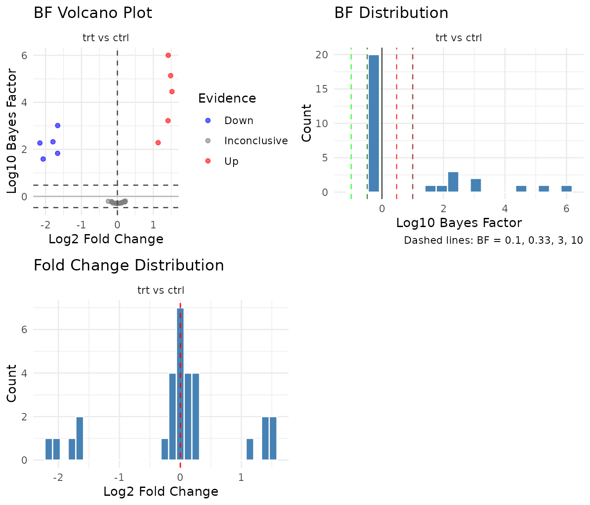

Two-Group Comparisons with Pairwise Tests
pairwise_tests.RmdWhen to use pairwise tests
Pairwise tests are the simplest approach to differential abundance: compare two groups directly, peptide by peptide. Use them when: - You have a straightforward two-group comparison (control vs treatment) - You don’t need to model interactions between multiple factors - You want interpretable, assumption-light analysis
For experiments with multiple factors (treatment × timepoint ×
genotype), consider the GLM method instead - see
vignette("glm_analysis").
Example data
We’ll generate a well-powered dataset: control vs treatment, 10 replicates per group, 30 peptides. 10 peptides are truly differential (5 up-regulated 3-fold, 5 down-regulated 3-fold). The remaining 20 have no true effect. With these settings, a good test should detect most of the 10 true positives while calling few of the 20 true nulls as significant.
set.seed(42)
n_peptides <- 30
n_reps <- 10 # Good power with 10 reps
peptides <- paste0("PEP_", sprintf("%03d", 1:n_peptides))
genes <- paste0("GENE_", LETTERS[((1:n_peptides - 1) %% 26) + 1])
# 10 peptides with real effects (3-fold up or down)
diff_peptides <- peptides[1:10]
effect_directions <- c(rep(3, 5), rep(0.33, 5))
sim_data <- expand.grid(
peptide = peptides,
treatment = c("ctrl", "trt"),
bio_rep = 1:n_reps,
stringsAsFactors = FALSE
) %>%
mutate(
gene_id = genes[match(peptide, peptides)],
base = rep(rgamma(n_peptides, shape = 5, rate = 0.5), each = 2 * n_reps),
effect = case_when(
peptide %in% diff_peptides & treatment == "trt" ~
effect_directions[match(peptide, diff_peptides)],
TRUE ~ 1
),
value = rgamma(n(), shape = 15, rate = 15 / (base * effect))
) %>%
select(peptide, gene_id, treatment, bio_rep, value)
# Import
temp_file <- tempfile(fileext = ".csv")
write.csv(sim_data, temp_file, row.names = FALSE)
dat <- read_pepdiff(
temp_file,
id = "peptide",
gene = "gene_id",
value = "value",
factors = "treatment",
replicate = "bio_rep"
)
dat
#> pepdiff_data object
#> -------------------
#> Peptides: 30
#> Observations: 600
#> Factors: treatment
#>
#> Design:
#> treatment=ctrl: 10 reps
#> treatment=trt: 10 reps
#>
#> No missing valuesThe four pairwise tests
pepdiff offers four pairwise tests, each with different properties. Let’s run all four on the same data:
res_wilcox <- compare(dat, compare = "treatment", ref = "ctrl",
method = "pairwise", test = "wilcoxon")
res_boot <- compare(dat, compare = "treatment", ref = "ctrl",
method = "pairwise", test = "bootstrap_t")
res_bayes <- compare(dat, compare = "treatment", ref = "ctrl",
method = "pairwise", test = "bayes_t")
res_rp <- compare(dat, compare = "treatment", ref = "ctrl",
method = "pairwise", test = "rankprod")Wilcoxon rank-sum test
res_wilcox
#> pepdiff_results object
#> ----------------------
#> Method: pairwise
#> Peptides: 30
#> Comparisons: 1
#> Total tests: 30
#>
#> Significant (FDR < 0.05): 10 (33.3%)
#> Marked significant: 10The “Marked significant” count shows how many peptides the test detected - ideally close to our 10 truly differential peptides, with few false positives from the 20 true nulls.
The Wilcoxon test compares ranks, not raw values. Each observation gets a rank (1st smallest, 2nd smallest, etc.), then the test asks: are ranks systematically higher in one group?
Why ranks? Outliers can only affect your rank by 1 position, no matter how extreme. If one sample has a value 1000× higher than the rest, it just gets the top rank - it can’t dominate the analysis. This makes Wilcoxon robust to non-normality and outliers.
Trade-off: By converting to ranks, you lose magnitude information. A 10-fold difference and a 2-fold difference might give similar results if the ranks are similar.
When to use: Default choice for small samples (3-4 replicates), non-normal data, or when you suspect outliers.
Bootstrap t-test
res_boot
#> pepdiff_results object
#> ----------------------
#> Method: pairwise
#> Peptides: 30
#> Comparisons: 1
#> Total tests: 30
#>
#> Significant (FDR < 0.05): 10 (33.3%)
#> Marked significant: 10The bootstrap t-test doesn’t assume your data follows a normal distribution. Instead, it builds a null distribution by resampling your actual data.
How it works: 1. Pool all observations from both groups 2. Randomly split them into fake “control” and “treatment” groups 3. Calculate the t-statistic for this fake split 4. Repeat thousands of times 5. See where your real t-statistic falls in this distribution
This way, the null distribution comes from your data’s actual shape, not a theoretical normal distribution.
When to use: When you have 4+ replicates per group and roughly symmetric data, but aren’t confident about normality.
Bayes factor t-test
res_bayes
#> pepdiff_results object
#> ----------------------
#> Method: pairwise
#> Peptides: 30
#> Comparisons: 1
#> Total tests: 30
#>
#> BF threshold: 3
#>
#> Evidence breakdown:
#> strong_null: 0
#> moderate_null: 0
#> inconclusive: 20
#> moderate_alt: 0
#> strong_alt: 10
#>
#> Significant (BF > 3): 10 (33.3%)Notice the output is different from the other tests. Instead of “Significant (FDR < 0.05)”, you see an evidence breakdown and “Significant (BF > 3)”. This reflects a fundamental difference in how Bayes factors work.
Why Bayes factors are different from p-values:
P-values and Bayes factors answer different questions:
| Approach | Question |
|---|---|
| P-value | “If there’s no effect, how surprising is this data?” |
| Bayes factor | “How much more likely is the data under effect vs no effect?” |
Because they’re fundamentally different, pepdiff handles
bayes_t results separately:
-
p_valueandfdrcolumns areNA(FDR correction doesn’t apply to BF) -
bfcolumn contains the raw Bayes factor (BF10) -
evidencecolumn categorizes the strength of evidence -
significantusesbf > bf_threshold(default 3)
Interpreting BF:
| BF Range | Evidence | Meaning |
|---|---|---|
| < 0.1 | Strong null | Strong evidence for no effect |
| 0.1 - 0.33 | Moderate null | Moderate evidence for no effect |
| 0.33 - 3 | Inconclusive | Data don’t distinguish hypotheses |
| 3 - 10 | Moderate alt | Moderate evidence for effect |
| > 10 | Strong alt | Strong evidence for effect |
The key advantage: BF can provide evidence for the null hypothesis, not just fail to reject it. A BF of 0.1 says “the data are 10× more likely if there’s no effect” - something p-values can never tell you.
When to use: When you want to quantify evidence strength, not just reject/don’t reject. Particularly useful when you want to conclude “no effect” rather than just “failed to detect effect”.
You can adjust the threshold for significance:
# Require strong evidence (BF > 10)
res_bayes_strict <- compare(dat, compare = "treatment", ref = "ctrl",
method = "pairwise", test = "bayes_t",
bf_threshold = 10)Rank products
res_rp
#> pepdiff_results object
#> ----------------------
#> Method: pairwise
#> Peptides: 30
#> Comparisons: 1
#> Total tests: 30
#>
#> Significant (FDR < 0.05): 10 (33.3%)
#> Marked significant: 10Rank products were designed specifically for high-throughput experiments. For each peptide, it ranks the fold changes across replicates, then multiplies ranks together.
The intuition: If a peptide is consistently up-regulated, it will have high ranks in every replicate, giving a high product. If it’s only up in some replicates, the low ranks will drag the product down.
When to use: When you expect effects to be consistent in direction across replicates. The method is particularly sensitive to consistent small effects.
How Rank Products differs from other tests
The other pairwise tests (wilcoxon, bootstrap_t, bayes_t) analyze each peptide independently - they ask “is this peptide different between groups?”
Rank Products works differently. It ranks all peptides by their fold change, then asks “does this peptide consistently rank near the top/bottom?” A peptide with FC=2 might be significant if most peptides have FC≈1, but not significant if many peptides have FC>2.
This means:
- Results depend on what other peptides are in your dataset
- The method excels at finding consistent small effects across replicates
- It’s less appropriate when you only have a few peptides or when effects vary in direction
Rank Products requires the RankProd Bioconductor package, which is installed automatically with pepdiff’s suggested dependencies.
Comparing results across tests
With 10 truly differential peptides, we want tests that detect most of them (high sensitivity) while not calling too many of the 20 true nulls significant (low false positive rate). Let’s see how the tests compare:
comparison <- tibble(
peptide = res_wilcox$results$peptide,
truly_diff = peptide %in% diff_peptides,
wilcoxon = res_wilcox$results$significant,
bootstrap = res_boot$results$significant,
bayes = res_bayes$results$significant,
rankprod = res_rp$results$significant
)
# How many significant calls per test?
comparison %>%
summarise(
across(wilcoxon:rankprod, sum)
)
#> # A tibble: 1 × 4
#> wilcoxon bootstrap bayes rankprod
#> <int> <int> <int> <int>
#> 1 10 10 10 10
# Agreement on truly differential peptides
comparison %>%
filter(truly_diff) %>%
summarise(
detected_by_all = sum(wilcoxon & bootstrap & bayes & rankprod),
detected_by_any = sum(wilcoxon | bootstrap | bayes | rankprod),
missed_by_all = sum(!wilcoxon & !bootstrap & !bayes & !rankprod)
)
#> # A tibble: 1 × 3
#> detected_by_all detected_by_any missed_by_all
#> <int> <int> <int>
#> 1 10 10 0The tests often agree on strong effects but may differ on borderline cases. When they disagree, it’s worth investigating that peptide more closely.
FDR correction (p-value tests only)
For wilcoxon, bootstrap_t, and rankprod, pepdiff reports both raw
p-values and FDR-adjusted values. Always use the
fdr column for significance decisions.
What is FDR? If you test 30 peptides at α = 0.05, you expect 1-2 false positives by chance alone. FDR (false discovery rate) correction accounts for this multiple testing. At 5% FDR, among all peptides you call significant, you expect about 5% to be false positives.
The Benjamini-Hochberg method is used by default. It’s less conservative than Bonferroni (you’ll miss fewer true positives) but still controls false discoveries.
# Raw p-values vs FDR-adjusted
res_wilcox$results %>%
select(peptide, p_value, fdr, significant) %>%
arrange(p_value) %>%
head(10)
#> # A tibble: 10 × 4
#> peptide p_value fdr significant
#> <chr> <dbl> <dbl> <lgl>
#> 1 PEP_005 0.000206 0.00195 TRUE
#> 2 PEP_010 0.000206 0.00195 TRUE
#> 3 PEP_001 0.000325 0.00195 TRUE
#> 4 PEP_002 0.000325 0.00195 TRUE
#> 5 PEP_004 0.000325 0.00195 TRUE
#> 6 PEP_008 0.000725 0.00363 TRUE
#> 7 PEP_007 0.00105 0.00450 TRUE
#> 8 PEP_006 0.00209 0.00696 TRUE
#> 9 PEP_009 0.00209 0.00696 TRUE
#> 10 PEP_003 0.00520 0.0156 TRUENotice how the FDR values are always >= the p-values. The adjustment is stronger for peptides ranking lower in significance.
Note: bayes_t does not use FDR
correction. Bayes factors already account for prior probabilities, and
traditional multiple testing corrections don’t apply. Instead, use the
bf column directly with an appropriate threshold (default:
BF > 3).
Visualising results
For p-value based tests, the multi-panel plot shows a volcano plot, p-value histogram, and fold change distribution:
plot(res_wilcox)
P-value histogram interpretation:
- Uniform distribution: No signal. All peptides behave as expected under null.
- Spike near 0 + uniform elsewhere: True positives exist. The spike represents peptides with real effects.
- U-shape (spikes at both 0 and 1): Something’s wrong - possibly violated assumptions or technical artifacts.
Bayes factor plots
For bayes_t results, pepdiff shows BF-specific
visualizations:
plot(res_bayes)
BF volcano plot: The y-axis shows log10(BF) instead of -log10(p). Points above 0 favor the alternative (effect exists); points below 0 favor the null (no effect). Reference lines at BF = 3 and BF = 0.33 mark conventional thresholds.
BF distribution: Shows the distribution of log10(BF) values. A good experiment with real effects will show a right tail (high BF for true positives). Unlike p-value histograms, BF distributions can pile up on either side - left tail means evidence for null, right tail means evidence for effect.
When pairwise isn’t enough
Pairwise tests treat each comparison independently. This becomes limiting when:
- Multiple factors: Treatment effect at timepoint 1 vs timepoint 2? Pairwise can’t model this directly.
- Interactions: Does treatment work differently in wildtype vs knockout? You need a model that includes both factors.
- Efficiency: With factorial designs, GLM uses all your data to estimate each effect, giving more power.
For these cases, see vignette("glm_analysis").